СП 115.13330.2016 «Геофизика опасных природных воздействий»
О документе: разработчики, утверждение, регистрация, ключевые слова
- 1 ИСПОЛНИТЕЛЬ - Общество с ограниченной ответственностью «Институт геотехники и инженерных изысканий в строительстве» (ООО «ИГИИС»)
- 2 ВНЕСЕН Техническим комитетом по стандартизации ТК 465 «Строительство»
- 3 ПОДГОТОВЛЕН к утверждению Департаментом градостроительной деятельности и архитектуры Министерства строительства и жилищно-коммунального хозяйства Российской Федерации (Минстрой России)
- 4 УТВЕРЖДЕН И ВВЕДЕН В ДЕЙСТВИЕ Приказом Министерства строительства и жилищнокоммунального хозяйства Российской Федерации от 16 декабря 2016 г. № 956/пр и введен в действие с 17 июня 2017 г.
- 5 ЗАРЕГИСТРИРОВАН Федеральным агентством по техническому регулированию и метрологии (Росстандарт). Пересмотр СП 115.13330.2011 «СНиП 22-01-95 Геофизика опасных природных воздействий»
- В случае пересмотра (замены) или отмены настоящего свода правил соответствующее уведомление будет опубликовано в установленном порядке. Соответствующая информация, уведомление и тексты размещаются также в информационной системе общего пользования - на официальном сайте разработчика (Минстрой России) в сети Интернет
© Минстрой России, 2016
Настоящий нормативный документ не может быть полностью или частично воспроизведен, тиражирован и распространен в качестве официального издания без разрешения Минстроя России
СП 115.13330.2016
Дата введения - 2017-06-17
Введение
Настоящий свод правил является результатом пересмотра СП 115.13330.2011 «СНиП 22-01-95 Геофизика опасных природных воздействий», выполненной в целях приведения его в соответствие с новыми требованиями законодательства Российской Федерации, актуализации терминов и определений, уточнения общих положений по оценке опасных природных воздействий при выполнении инженерных изысканий на различных этапах градостроительной деятельности и жизненного цикла зданий и сооружений.
При разработке учтены основные положения [1] и [2].
Пересмотр выполнен авторским коллективом Общества с ограниченной ответственностью «Институт геотехники и инженерных изысканий в строительстве» (ООО «ИГИИС») (канд. геол.-минерал. наук М.И. Богданов -руководитель темы, Г.Р. Болгова , С.А. Гурова , Н.П. Иевлева , И.Д. Колесников , Н.Г. Корнева , Е.В. Леденева , канд. геол.-минерал. наук М.С. Наумов ).
Карта распространения лавин и степени их активности на территории Российской Федерации (автор -д-р геогр. наук С.М. Мягков ) и карта распространения селевых явлений на территории Российской Федерации (автор - д-р геогр. наук В.Ф. Перов ) приведены в приложении Б (рисунки Б.1-Б.2, электронные файлы Б.1-Б.2). Карты предоставлены научно-исследовательской лабораторией снежных лавин и селей географического факультета МГУ им. М.В. Ломоносова.
Карты распространения оползней, суффозионных процессов, карста на территории Российской Федерации приведены в приложении Б (рисунки Б.3-Б.5, электронные файлы Б.3-Б.5). Карты предоставлены Институтом минералогии, геохимии и кристаллохимии редких элементов (ФГУП «ИМГРЭ») (руководители авторского коллектива - канд. геол.-минерал. наук И.Г. Спиридонов и канд. геол.минерал. наук Н.А. Миронов) . Полный список авторов приведен на картах.
Карты распространения засоленных, просадочных, органических грунтов на территории Российской Федерации приведены в приложении Б (рисунки Б.6Б.8, электронные файлы Б.6-Б.8). Источник информации - «Инженерно-
СП 115.13330.2016 геологическая карта территории Российской Федерации», ФГУП «ВСЕГИНГЕО», 2010 г., отв. исполнитель С.Н. Чекрыгина .
Карта распространения многолетнемерзлых грунтов на территории Российской Федерации приведена в приложении Б (рисунок Б.9, электронный файл Б.9). Источник информации - «Геокриологическая карта СССР», 1991 г., МГУ им. М.В. Ломоносова, гл. редактор Э.Д. Ершов .
Карты цунамирайонирования (пространственного распределения возможных высот цунами редкой повторяемости) Северных и Южных Курильских островов предоставлены Институтом морской геологии и геофизики Дальневосточного отделения Российской академии наук (ФГБУН ИМГиГ ДВО РАН) и приведены в приложении В. Карты разработаны канд. физ.-мат. наук В.М. Кайстренко, канд. геогр. наук Д.Е. Золотухиным при участии д-ра физ.-мат. наук Е.Н. Пелиновского (Институт прикладной физики РАН, г. Нижний Новгород) канд. техн. наук В.Н. Храмушина (Санкт-Петербургский государственный университет, г. Санкт-Петербург), нормативное техническое руководство осуществлялось канд. техн. наук М.А. Клячко (Федеральное государственное унитарное предприятие «Научно-технический центр по сейсмостойкому строительству и инженерной защите от стихийных бедствий»).
Примечание -Карты в исходных масштабах, содержащиеся в электронных приложениях Б, В, являются неотъемлемой частью настоящего свода правил.
1Область применения
Настоящий свод правил устанавливает основные положения по оценке опасных природных воздействий при выполнении инженерных изысканий на этапах градостроительной деятельности: территориальном планировании, планировке территории, архитектурно-строительном проектировании, строительстве, капитальном ремонте, реконструкции объектов капитального строительства, эксплуатации зданий, сооружений, а также для разработки схем (проектов) инженерной защиты.
2Нормативные ссылки
В настоящем своде правил использованы нормативные ссылки на следующие документы:
ГОСТ 22.0.03-97 Безопасность в чрезвычайных ситуациях. Природные чрезвычайные ситуации. Термины и определения
ГОСТ 19179-73 Гидрология суши. Термины и определения
ГОСТ 25100-2011 Грунты. Классификация
СП 14.13330.2014 «СНиП II-7-81* Строительство в сейсмических районах» (с изменением № 1)
СП 25.13330.2012 «СНиП 2.02.04-88 Основания и фундаменты на вечномерзлых грунтах»
СП 47.13330.2012 «СНиП 11-02-96 Инженерные изыскания для строительства. Основные положения»
СП 116.13330.2012 «СНиП 22-02-2003 Инженерная защита территорий, зданий и сооружений от опасных геологических процессов. Основные положения».
\_\_\_\_\_\_\_\_\_\_\_\_\_\_\_\_\_\_\_\_\_\_\_\_\_\_\_\_\_\_\_\_\_\_\_\_\_\_\_\_\_\_\_\_\_\_\_\_\_\_\_\_\_\_\_\_\_\_\_\_\_\_\_\_\_\_
Примечание - При пользовании настоящим сводом правил целесообразно проверить действие ссылочных документов в информационной системе общего пользования - на официальном сайте федерального органа исполнительной власти в сфере стандартизации в сети Интернет или по ежегодному информационному указателю «Национальные стандарты», который опубликован по состоянию на 1 января текущего года, и по выпускам ежемесячного информационного указателя «Национальные стандарты» за текущий год. Если заменен ссылочный документ, на который дана недатированная ссылка, то рекомендуется использовать действующую версию этого документа с учетом всех внесенных в данную версию изменений. Если заменен ссылочный документ, на который дана датированная ссылка, то рекомендуется использовать версию этого документа с указанным выше годом утверждения (принятия). Если после утверждения настоящего свода правил в ссылочный документ, на который дана датированная ссылка, внесено изменение, затрагивающее положение, на которое дана ссылка, то это положение рекомендуется применять без учета данного изменения. Если ссылочный документ отменен без замены, то положение, в котором дана ссылка на него, рекомендуется применять в части, не затрагивающей эту ссылку. Сведения о действии сводов правил целесообразно проверить в Федеральном информационном фонде стандартов.
3Термины и определения
В настоящем своде правил применены термины по [1], [2], ГОСТ 19179, ГОСТ 22.0.03, ГОСТ 25100, СП 14.13330, СП 25.13330, СП 116.13330, а также следующие термины с соответствующими определениями:
- 3.1абразия
- Разрушение морским волноприбоем берегов и прибрежных участков морского дна.
- 3.2активный разлом
- Тектоническое нарушение с признаками постоянных или периодических перемещений бортов разлома в позднем плейстоцене голоцене (за последние 100 000 лет), величина (скорость) которых такова, что она представляет опасность для сооружений и требует специальных конструктивных и/или компоновочных мероприятий для обеспечения их безопасности.Источник: СП 14.13330.2014
- 3.3бугры пучения
- Выпуклые формы криогенного рельефа c ледяным или ледогрунтовым ядром, образующиеся в области многолетнемерзлых и сезонномерзлых пород в результате неравномерного льдообразования в породах.
- 3.4воздействие
- Явление, вызывающее изменение напряженнодеформированного состояния строительных конструкций и (или) основания здания или сооружения.Источник: 2, статья 2
- 3.5вулкан
- Геологическое образование, возникающее над каналами и трещинами в земной коре, по которым на земную поверхность извергаются лава, пепел, горячие газы, пары воды и обломки горных пород.Источник: ГОСТ 22.0.03-97
- 3.6градостроительная деятельность
- Деятельность по развитию территорий, в том числе городов и иных поселений, осуществляемая в виде территориального планирования, градостроительного зонирования, планировки территории, архитектурно-строительного проектирования, строительства, капитального ремонта, реконструкции объектов капитального строительства, эксплуатации зданий, сооружений.Источник: 1, статья 1
- 3.7заболачивание
- Процесс избыточного переувлажнения почв и грунтов с образованием торфа, ведущий к формированию болот.
- 3.8зажор
- Скопления шуги с включением мелкобитого льда в русле реки, вызывающее стеснение водного сечения и связанный с этим подъем уровня воды.Источник: ГОСТ 19179-73
- 3.9
- засоленность: Характеристика, определяемая количеством водорастворимых солей в грунте.Источник: ГОСТ 25100-2011
- 3.10затор
- Скопление льдин в русле реки во время ледохода, вызывающее стеснение водного сечения и связанный с этим подъем уровня воды. [ГОСТ 19179-73]
- 3.11землетрясение
- Подземные толчки и колебания земной поверхности, возникающие в результате внезапных смещений и разрывов в земной коре или верхней части мантии Земли и передающиеся на большие расстояния в виде упругих колебаний.Источник: ГОСТ 22.0.03-97
- 3.12интенсивность землетрясения
- Оценка воздействия землетрясения в баллах 12-балльной шкалы, определяемая по макросейсмическим описаниям разрушений и повреждений природных объектов, грунта, зданий и сооружений, движений тел, а также по наблюдениям и ощущениям людей.Источник: СП 14.13330.2014
- 3.13карст
- Комплексный геологический процесс, обусловленный растворением подземными и (или) поверхностными водами горных пород, проявляющийся в их ослаблении, разрушении, образовании пустот и пещер, изменении напряженного состояния пород, динамики, химического состава и режима подземных и поверхностных вод, в развитии суффозии (механической и химической), эрозий, оседаний, обрушений и провалов грунтов и земной поверхности.Источник: СП 116.13330.2012
- 3.14катастрофический паводок
- Выдающийся по величине и редкий по повторяемости паводок, могущий вызвать жертвы и разрушения. Примечание - Понятие катастрофический паводок применяют также к половодью, вызывающему такие же последствия.Источник: ГОСТ 19179-73
- 3.15катастрофический ливень
- Кратковременные атмосферные осадки большой интенсивности, обычно в виде дождя или снега, которые могут вызвать жертвы и разрушения .
- 3.16карта районирования
- Отображение на топографическом плане (карте) таксономических единиц (областей, районов, участков и т. п.), выделенных по иерархическому принципу, учитывающему различные факторы, определяющие природные условия.
- 3.17курумы
- Скопления грубообломочного материала, перемещающегося вниз по склонам под действием процессов выветривания, растрескивания, пучения, солифлюкции и силы тяжести.
- 3.18лавина
- Быстрое, внезапно возникающее движение снега и (или) льда вниз по крутым склонам гор, представляющее угрозу жизни и здоровью людей, наносящее ущерб объектам экономики и окружающей природной среде.Источник: ГОСТ 22.0.03-97
- 3.19мерзлый грунт
- Грунт, имеющий отрицательную или нулевую температуру, содержащий в своем составе видимые ледяные включения и (или) лед-цемент и характеризующийся криогенными структурными связями. Многолетнемерзлый грунт -грунт, находящийся в мерзлом состоянии постоянно в течение трех и более лет. Сезонномерзлый грунт - грунт, находящийся в мерзлом состоянии периодически в течение холодного сезона.Источник: ГОСТ 25100-2011
- 3.20морозное (криогенное) пучение
- Процесс, вызванный промерзанием грунта, миграцией влаги, образованием ледяных прослоев, деформацией скелета грунта, приводящих к увеличению объема грунта и поднятию его поверхности.Источник: СП 116.13330.2012
- 3.21набухающий грунт
- Глинистый грунт, способный к увеличению объема при постоянной нагрузке вследствие замачивания.
- 3.22наводнение
- Затопление территории водой, являющееся стихийным бедствием. Примечание - Наводнение может происходить в результате подъема уровня воды во время половодья или паводка, при заторе, зажоре, вследствие нагона в устье реки, а также при прорыве гидротехнических сооружений.Источник: ГОСТ 19179-73
- 3.23нагрузка
- Механическая сила, прилагаемая к строительным конструкциям и (или) основанию здания или сооружения и определяющая их напряженнодеформированное состояние. [2, статья 2].
- 3.24наледь
- Слоистый ледяной массив на поверхности земли, льда или инженерных сооружений, образовавшийся при замерзании периодически изливающихся подземных или речных вод.Источник: СП 116.13330.2012
- 3.25обвалы
- Отрыв масс горных пород склонов, бортов и их падение вниз под влиянием силы тяжести с опрокидыванием и перекатыванием без воздействия воды.Источник: СП 116.13330.2012
- 3.26общее сейсмическое районирование; ОСР
- Отображение на карте Российской Федерации территорий, в пределах которых возможны землетрясения с определенной интенсивностью в баллах макросейсмической шкалы с вероятностью в заданный период времени.
- 3.27опасный геологический процесс
- Изменение состояния приповерхностной части литосферы (геологической среды), обусловленное естественными или техногенными причинами, которое может привести к негативным последствиям для человека, объектов хозяйства и окружающей среды.Источник: СП 116.13330.2012
- 3.28опасные природные воздействия
- Природные процессы и явления, которые вызывают негативные и (или) разрушительные изменения напряженнодеформированного состояния строительных конструкций и (или) оснований зданий или сооружений и могут нанести вред жизни и здоровью людей.
- 3.29опасное природное явление
- Событие природного происхождения или результат деятельности природных процессов, которые по своей интенсивности, масштабу распространения и продолжительности могут вызвать поражающее воздействие на людей, объекты экономики и окружающую природную среду.Источник: ГОСТ 22.0.03-97
- 3.30оползни
- Движение (скольжение, вязкопластическое течение) масс пород на склоне, происходящее без потери контакта между смещающейся массой и подстилающим неподвижным массивом.
- 3.31органический грунт
- Грунт, содержащий 50% (по массе) и более органического вещества.Источник: ГОСТ 25100-2011
- 3.32органо-минеральный грунт
- Грунт, содержащий от 3 % до 50 % (по массе) органического вещества.Источник: ГОСТ 25100-2011
- 3.33охлажденный грунт
- Засоленный грунт, отрицательная температура которого выше температуры начала его замерзания.Источник: ГОСТ 25100-2011
- 3.34переработка берегов морей, озер, водохранилищ, рек
- Размыв и разрушение пород берегов под действием прибоя и русловых процессов. [СП 116.13330.2012]
- 3.35пластовые льды
- Скопления льда (разного генезиса) в массиве многолетнемерзлых грунтов (преимущественно пластовой формы).
- 3.36повторно-жильные льды
- Вид подземного льда, имеющего форму клина и формирующегося в результате многократного морозного растрескивания грунтов и заполнения трещин льдом.
- 3.37подтопление
- Комплексный гидрогеологический и инженерногеологический процесс, при котором в результате изменения водного режима и баланса территории происходят повышения уровней (напоров) подземных вод и/или влажности грунтов, превышающие принятые для данного вида застройки критические значения и нарушающие необходимые условия строительства и эксплуатации объектов.Источник: СП 116.13330.2012
- 3.38половодье
- Фаза водного режима реки, ежегодно повторяющаяся в данных климатических условиях в один и тот же сезон, характеризующаяся наибольшей водностью, высоким и длительным подъемом уровня воды, и вызываемая снеготаянием или совместным таянием снега и ледников. Примечание - Различают половодья весеннее, весенне-летнее и летнее. [ГОСТ 19179-73]
- 3.39прогноз изменения природных и техногенных условий
- Качественная и (или) количественная оценка изменения свойств и состояния природной среды во времени и в пространстве под влиянием естественных и техногенных факторов.
- 3.40просадочность грунта
- Способность грунтов к уменьшению объема вследствие замачивания при постоянной внешней нагрузке и (или) нагрузки от собственного веса.
- 3.41просадочность лессовых пород
- Способность лессовых грунтов к уменьшению объема вследствие замачивания при постоянной внешней нагрузке и (или) нагрузки от собственного веса.
- 3.42русловые деформации
- Изменение размеров и положения в пространстве речного русла и отдельных русловых образований, связанное с переотложением наносов.Источник: ГОСТ 19179-73
- 3.43сейсмическое воздействие
- Движение грунта, вызванное природными или техногенными факторами (землетрясения, взрывы, движение транспорта, работа промышленного оборудования), обусловливающее движение, деформации, иногда разрушение сооружений и других объектов.Источник: СП 14.13330.2014
- 3.44сель
- Стремительный поток большой разрушительной силы, состоящий из смеси воды и рыхлообломочных пород, внезапно возникающий в бассейнах небольших горных рек в результате интенсивных дождей или бурного таяния снега, а также прорыва завалов и морен.Источник: ГОСТ 19179-73
- 3.45сложные природные условия
- Наличие специфических по составу и состоянию грунтов и (или) риска возникновения (развития) опасных природных процессов и явлений и (или) техногенных воздействий на территории, на которой будут осуществлять строительство, реконструкцию и эксплуатацию здания или сооружения.
- 3.46смерч
- Сильный маломасштабный атмосферный вихрь диаметром до 1000 м, в котором воздух вращается со скоростью до 100 м/с, обладающий большой разрушительной силой.Источник: ГОСТ 22.0.03-97
- 3.47специфический грунт
- Грунт, изменяющий свою структуру и свойства в результате замачивания, динамических нагрузок и других видов внешних воздействий, обладающий неоднородностью и анизотропией (физической и геометрической), склонный к длительным изменениям структуры и свойств во времени.
- 3.48солифлюкция
- Смещение (течение, оползание, соскальзывание, сплывы, оплывины) оттаивающего переувлажненного тонкодисперсного грунта на склонах в теплое время суток года, обусловленное сезонным промерзанием и оттаиванием.Источник: СП 25.13330.2012
- 3.49
- схемы инженерной защиты (генеральные, детальные, специальные): Проектный материал, разработанный с целью определения и обоснования оптимального комплекса инженерной защиты, его укрупненной ориентировочной стоимости и очередности осуществления.Источник: СП 116.13330.2012
- 3.50суффозия
- Разрушение и вынос потоком подземных вод отдельных компонентов и крупных масс дисперсных и сцементированных обломочных пород, в том числе слагающих структурные элементы скальных массивов.Источник: СП 116.13330.2012
- 3.51термоабразия
- Процесс разрушения берегов (морей, озер, рек), сложенных многолетнемерзлыми грунтами, под термомеханическим воздействием (протаивания, разрушения, траспортировки) на них водных масс.
- 3.52термокарст ( здесь )
- Процесс оттаивания льдистых грунтов, подземных льдов, сопровождающийся их осадкой и образованием отрицательных форм рельефа.
- 3.53термоэрозия
- Процесс разрушения многолетнемерзлых грунтов водными потоками за счет оттаивания и выноса грунтов, оползания и обрушения растущих эрозионных форм (промоин, борозд, оврагов).
- 3.54территориальное планирование
- Планирование развития территорий, в том числе для установления функциональных зон, определения планируемого размещения объектов федерального значения, объектов регионального значения, объектов местного значения [1, статья 1].
- 3.55техногенные воздействия
- Опасные воздействия, являющиеся следствием аварий в зданиях, сооружениях или на транспорте, пожаров, взрывов или высвобождения различных видов энергии, а также воздействия, являющиеся следствием строительной деятельности на прилегающей территории [2, статья 2].
- 3.56ураган
- Ветер разрушительной силы и значительной продолжительности, скорость которого превышает 32 м/с. [ГОСТ 22.0.03-97]
- 3.57факторы опасных природных воздействий
- Динамические (землетрясения, лавины, обвалы и др.) и статические воздействия (результаты изменения состояния, структуры, свойств грунтов), влияющие на безопасность зданий и сооружений, жизнь и здоровье людей.
- 3.58цунами
- Морские волны, возникающие при подводных и прибрежных землетрясениях.Источник: ГОСТ 22.0.03-97
- 3.59шквал
- Резкое кратковременное усиление ветра до 20-30 м/с и выше, сопровождающееся изменением его направления, связанное с конвективными процессами.Источник: ГОСТ 22.0.03-97
- 3.60шторм
- Длительный очень сильный ветер со скоростью свыше 20 м/с, вызывающий сильные волнения на море и разрушения на суше.Источник: ГОСТ 22.0.03-97
- 3.61эрозия
- Процесс разрушения горных пород водным потоком.
- 3.62эрозия плоскостная
- Разрушение пород рассредоточенными водными потоками, не приводящее к образованию характерных эрозионных форм (оврагов, промоин).
- 3.63эрозия овражная
- Разрушение пород сосредоточенными водными потоками, приводящее к образованию характерных эрозионных форм (оврагов, промоин).
4Общие положения
Таблица 4.1 Природные процессы и явления, многолетнемерзлые и специфические грунты
| Геологические процессы и явления, многолетнемерзлые и специфические грунты | Гидрологические и метеорологические процессы и явления |
|---|---|
| Вулканическая деятельность | Зажор |
| Землетрясение* | Затор |
| Заболачивание | Катастрофический паводок |
| Карст | Катастрофический ливень |
| Обвалы, осыпи | Лавина |
| Оползни | Наледь |
| Подтопление | Половодье |
| Суффозия | Русловые деформации |
| Эрозия | Смерч |
| Бугры пучения | Ураган |
| Курумы | Цунами |
| Многолетнемерзлый грунт | Шквал |
| Морозное пучение | Шторм |
| Пластовый лед | |
| Повторно-жильный лед | |
| Солифлюкция |
| Геологические процессы и явления, многолетнемерзлые и специфические грунты | Гидрологические и метеорологические процессы и явления |
|---|---|
| Термоабразия | |
| Термокарст | |
| Термоэрозия | |
| Засоленный грунт | |
| Набухающий грунт | |
| Органический грунт | |
| Органо-минеральный грунт | |
| Охлажденный грунт | |
| Просадочный грунт | |
| Переработка берегов морей водохранилищ и озер | Переработка берегов морей водохранилищ и озер |
| Сель | Сель |
5Категории опасности природных воздействий
Определение категории опасности выполняется отдельно по каждому оценочному показателю, в зависимости от решаемых практических задач.
Параметры показателей могут корректировать с учетом региональных особенностей, вида и назначения объектов строительства.
Таблица 5.1 Категории опасности природных воздействий
| Показатели, используемые при оценке категории опасности природного процесса | Категории опасности процессов | Категории опасности процессов | Категории опасности процессов | Категории опасности процессов |
|---|---|---|---|---|
| (ОПП) | чрезвычайно опасные (катастрофи- ческие) | весьма опасные | опасные | умеренно опасные |
| Оползни | Оползни | Оползни | Оползни | Оползни |
| Площадная пораженность территории,% | Более 30 | 11-30 | 1-10 | 0,1-1 |
| Площадь разового проявления на одном участке, км² | 1-2 | 1-0,5 | 0,01-0,5 | Менее 0,01 |
| Максимальный объем оползня, тыс. м³ | Более 1000 | Более 100-1000 | Более 10-100 | Более 1-10 |
| Максимальная глубина захвата пород оползнем, м | Более 30 | Более 20-30 | Более 15-20 | Более 7-15 |
| Скорость смещения | Менее 5 м/с | Менее 2 м/с | 1-2 м/c (1-10 м/сут) | 1-5 м/сут (5- 10 м/мес) |
| Повторяемость, ед./год | 0,04-0,01 | 0,04-0,01 | 0,05-0,1 | 0,05-0,1 |
| Сели | Сели | Сели | Сели | Сели |
| Площадная пораженность территории,% | - | Более 50 | 10-50 | Менее 10 |
| Объем единовременного выноса, млн м³ | - | Более 0,5 | 0,05-0,5 | Менее 0,05 |
| Скорость движения, м/c 2-15 | Скорость движения, м/c 2-15 | Скорость движения, м/c 2-15 | Скорость движения, м/c 2-15 | Скорость движения, м/c 2-15 |
| Повторяемость, ед./год | - | Менее 0,01 | 0,1-0,01 | Более 0,1 |
| Лавины | Лавины | Лавины | Лавины | Лавины |
| Площадная пораженность территории,% | - | Более 30 | 10-30 | Менее 10 |
| Объем единовременного выноса, млн м³ | - | Более 0,1 | 0,01-0,1 | Менее 0,01 |
| Повторяемость, ед./год | - | Менее 0,1 | 0,1-1,0 | Более 1 |
| Землетрясения | Землетрясения | Землетрясения | Землетрясения | Землетрясения |
| Интенсивность, баллы | Более 9 | 8-9 | 6-7 | Менее 6 |
| Период повторяемости, лет | 5000 | 1000 | 500 | |
| Абразия и термоабразия | Абразия и термоабразия | Абразия и термоабразия | Абразия и термоабразия | Абразия и термоабразия |
| Средняя скорость отступания береговой линии, м/год: пределы изменения | - | 1-15 | 0,4-3,8 | 0,05-1,8 |
| средние значения | - | Более 2 | 2-0,5 | Менее 0,5 |
| Переработка берегов водохранилищ, озер | Переработка берегов водохранилищ, озер | Переработка берегов водохранилищ, озер | Переработка берегов водохранилищ, озер | Переработка берегов водохранилищ, озер |
| Скорость линейного отступания берегов на отдельных участках по стадиям развития процесса, м/год: первая | - | Более 3 | 3-1 | Менее 1 |
| вторая | - | 1,5 | 1,5-0,9 | Менее 0,9 |
| Карст | Карст | Карст | Карст | Карст |
| Площадная пораженность территории,% | - | 5-80 | 5-50 | Менее 5 |
| Показатели, используемые при оценке категории опасности природного процесса | Категории опасности процессов | Категории опасности процессов | Категории опасности процессов | Категории опасности процессов |
|---|---|---|---|---|
| (ОПП) | чрезвычайно опасные (катастрофи- ческие) | весьма опасные | опасные | умеренно опасные |
| Частота провалов земной поверхности, случаев в год | - | Более 0,1 | Менее 0,1 | Менее 0,01 |
| Средний диаметр провалов, м | - | Более 20 | 3-20 | Менее 3 |
| Общее оседание территории, мм/год | - | Более 5 | Менее 5 | Отсутствует |
| Суффозия | Суффозия | Суффозия | Суффозия | Суффозия |
| Площадная пораженность территории,% | - | Более 10 | 2-10 | Менее 2 |
| Площадь проявления на одном участке, тыс. км² | - | Менее 10 | Менее 5 | Менее 1 |
| Объем подверженных деформации горных пород, тыс. м³ | - | Менее 30 | Менее 10 | Менее 1 |
| Продолжительность проявления процесса, сут | - | Менее 3 | 3-30 | Более 30 |
| Скорость развития процесса, см/сут | - | Более 10 | 0,1-10 | Менее 0,1 |
| Просадочность лессовых пород | Просадочность лессовых пород | Просадочность лессовых пород | Просадочность лессовых пород | Просадочность лессовых пород |
| Площадная пораженность территории,% | - | 60-70 | 50-60 | 30-50 |
| Мощность просадочной толщи, м | Более 50 | 30-40 | 20-30 | До 20 |
| Продолжительность проявления процесса, сут | - | 2-40 | 25-100 | Более 100 |
| Скорость развития, см/сут | - | 0,5-3,0 | 0,1-0,5 | Менее 0,1 |
| Подтопление территории | Подтопление территории | Подтопление территории | Подтопление территории | Подтопление территории |
| Площадная пораженность территории,% | - | 75-100 | 50-75 | Менее 50 |
| Продолжительность формирования водоносного горизонта, лет | - | Менее 3 | Не более 5 | Более 5 |
| Скорость подъема уровня подземных вод, м/год | - | Более 1 | 0,5-1 | 0,5 |
| Эрозия плоскостная и овражная | Эрозия плоскостная и овражная | Эрозия плоскостная и овражная | Эрозия плоскостная и овражная | Эрозия плоскостная и овражная |
| Площадная пораженность территории,% | - | Более 50 | 30-50 | 10-30 |
| Площадь одиночного оврага, км² | - | 0,1-3,0 | 0,05-0,1 | Менее 0,05 |
| Скорость развития эрозии: плоскостной, м³ /(га·год) овражной, м/год | - - | 10-15 1-15 | 5-10 1-10 | 2-5 1-5 |
| Русловые деформации | Русловые деформации | Русловые деформации | Русловые деформации | Русловые деформации |
| Площадная пораженность территории,% | - | 8-10 | 6-8 | 5-6 |
| Объем относительно одновременных | - | 0,2-0,3 | Менее 0,04 | Менее 0,08 |
| Показатели, используемые при оценке категории опасности | Категории опасности процессов | Категории опасности процессов | Категории опасности процессов | Категории опасности процессов |
|---|---|---|---|---|
| природного процесса (ОПП) | чрезвычайно опасные (катастрофи- ческие) | весьма опасные | опасные | умеренно опасные |
| деформаций пород, млн м³ /год | ||||
| Скорость развития, м/год | - | Более 3 | 1-3 | 0,1-1 |
| Термоэрозия овражная | Термоэрозия овражная | Термоэрозия овражная | Термоэрозия овражная | Термоэрозия овражная |
| Потенциальная площадная пораженность территории, % | - | Более 50 | 25-50 | Менее 25 |
| Объем относительно одновременных деформаций пород, тыс. м³ /год | - | 1-10 | Менее 1 | Менее 1 |
| Скорость развития, м³ /(м² ·ч) | - | Более 0,1 | 0,01-0,1 | Менее 0,01 |
| Термокарст | Термокарст | Термокарст | Термокарст | Термокарст |
| Потенциальная площадная пораженность территории, % | - | 50-75 | 25-50 | Менее 25 |
| Площадь проявления на одном участке, тыс. км² | - | 0,001-1 | 0,001-1 | 0,001-1 |
| Продолжительность проявления, лет | - | 10-20 | 5 | 1-5 |
| Скорость развития, см/год | - | 15-100 | 5-15 | - |
| Пучение | Пучение | Пучение | Пучение | Пучение |
| Потенциальная площадная пораженность территории, % | - | Более 75 | 25-75 | Менее 25 |
| Площадь проявления на одном участке, тыс. км² | - | 0,01-10 | 0,01-10 | 0,01-10 |
| Скорость развития, см/год | - | До 50 | 5-10 | Менее 5 |
| Солифлюкция | Солифлюкция | Солифлюкция | Солифлюкция | Солифлюкция |
| Площадная пораженность территории,% | - | Более 10 | 10-5 | Менее 5 |
| Площадь проявления на одном участке, км² | - | 0,0001-1 | 0,0001-1 | 0,0001-1 |
| Объем единичных относительных одновременных деформаций пород, тыс. м³ | - | Более100 | 1-100 | 0,1-20 |
| Скорость развития | - | Более 100 м/ч | От 2-10 см/год до 100 м/ч | Менее 2 см/год |
| Наледеобразование | Наледеобразование | Наледеобразование | Наледеобразование | Наледеобразование |
| Площадная пораженность территории,% | - | 5-10 | 1-5 | Менее 1 |
| Площадь проявления на одном участке, км² | - | От 1-2 до 50-80 | 0,01-1 | Менее 0,01 |
| Скорость развития, тыс. м³ /сут | - | 5-100 | 0,1-5,0 |
| Показатели, используемые при оценке категории опасности природного процесса | Категории опасности процессов | Категории опасности процессов | Категории опасности процессов | Категории опасности процессов |
|---|---|---|---|---|
| (ОПП) | чрезвычайно опасные (катастрофи- ческие) | весьма опасные | опасные | умеренно опасные |
| Наводнение (вследствие половодья, затора, зажора, катастрофического ливня) | Наводнение (вследствие половодья, затора, зажора, катастрофического ливня) | Наводнение (вследствие половодья, затора, зажора, катастрофического ливня) | Наводнение (вследствие половодья, затора, зажора, катастрофического ливня) | Наводнение (вследствие половодья, затора, зажора, катастрофического ливня) |
| Площадная пораженность территории,% | 50 | 25 | 15 | 10 |
| Продолжительность проявления, сут | 20-25 | 15-20 | 5-15 | 1-5 |
| Скорость развития, м/сут | 5-6 | 3-5 | 1-3 | 0,5-1,0 |
| Повторяемость, ед./год | 0,001-0,01 | 0,01-0,02 | 0,02-0,05 | 0,05-0,1 |
| Ураганы, смерчи | Ураганы, смерчи | Ураганы, смерчи | Ураганы, смерчи | Ураганы, смерчи |
| Площадная пораженность территории,% | 70 | 30-70 | 30 | 20 |
| Продолжительность проявления, ч | 5-10 | 3-5 | 1-3 | Менее 1 |
| Скорость перемещения, м/с | 700-100 | 50-70 | 35-40 | 25-40 |
| Повторяемость, ед./год | 0,001-0,01 | 0,01-0,02 | 0,02-0,05 | 0,05-0,1 |
| Цунами | Цунами | Цунами | Цунами | Цунами |
| Площадная пораженность территории,% | 20 | 11-14 | 5-8 | 1 |
| Протяженность берега, в пределах которого относительно одновременно происходит развитие процесса, км | 150-500 | 50-150 | 20-50 | 1-20 |
| Продолжительность проявления, ч | 10 | 6 | 4 | 2 |
| Скорость распространения энергии волны, км/ч | Более 500 | 200-500 | 20-200 | 10-20 |
| Скорость течения воды, км/ч | Более 50 | 10-50 | 2-10 | 0,5-2 |
| Повторяемость, ед./год | 0,001-0,01 | 0,01-0,02 | 0,02-0,05 | 0,05-0,1 |
6Общие требования при оценке опасных природных воздействий на различных этапах градостроительной деятельности
6.1Территориальное планирование
СП 115.13330.2016
- характеристику природных условий конкурентных вариантов размещения площадок строительства, трасс линейных сооружений;
- оценку возможности воздействия на намечаемые объекты строительства опасных природных процессов и явлений, специфических и многолетнемерзлых грунтов;
- обоснование выбора оптимальных (по природным условиям) вариантов размещения площадок строительства и трасс линейных сооружений;
- рекомендации по разработке мероприятий по устранению или ослаблению влияния опасных природных воздействий;
- карты районирования с указанием границ территорий с развитием опасных природных процессов, явлений, специфических и многолетнемерзлых грунтов в масштабах, приведенных в приложении Г.
6.2Планировка территории
При недостаточности имеющейся информации для оценки возможности проявления опасных природных воздействий при разработке проекта планировки территории выполняют инженерные изыскания.
СП 115.13330.2016 учетом предварительной оценки возможности проявления опасных природных воздействий, степени изученности территории, вида и назначения объектов, планируемых к размещению на данной территории и ожидаемых видов опасных природных воздействий.
6.3Оценка опасных природных воздействий
При разработке проектной документации объектов капитального строительства осуществляют комплексное изучение природных и техногенных условий территории, включая изучение опасных природных процессов и явлений, специфических и многолетнемерзлых грунтов, выбранной площадки (трассы) с детальностью, достаточной для разработки проектных решений.
- оценку возможности воздействия на намечаемые объекты строительства опасных природных процессов и явлений, в том числе связанных со свойствами специфических и многолетнемерзлых грунтов;
- карты территории строительства с выделением границ участков развития опасных природных процессов и распространения специфических и многолетнемерзлых грунтов;
- условия формирования и развития опасных природных процессов, специфических и многолетнемерзлых грунтов; оценку степени пораженности территории этими процессами и образованиями;
- качественный и количественный прогноз развития опасных природных процессов во времени и пространстве в естественных условиях и в процессе строительства и эксплуатации проектируемых объектов;
- рекомендации по проведению мониторинга в процессе строительства и эксплуатации зданий и сооружений за развитием опасных природных процессов;
- рекомендации по учету и предупреждению чрезвычайных ситуаций природного и техногенного характера (для объектов повышенного и нормального уровня ответственности) [2].
6.4Строительство (в том числе консервация), эксплуатация, реконструкция, капитальный ремонт
СП 115.13330.2016 изысканий, выполненных для архитектурно-строительного проектирования (разработки проектной документации) зданий и сооружений.
АПриложение А. (рекомендуемое)
Перечень источников информации для оценки опасных природных воздействий
В настоящем приложении представлены данные относительно источников информации с целью оценки опасных природных воздействий (см. таблицу А.1).
Таблица А.1
| Источник информации для оценки опасных геологических процессов | Источник информации для оценки опасных гидрологических и метеорологических процессов и явлений |
|---|---|
| Крупномасштабный картографический материал (геологические, гидрогеологические, инженерно-геологические карты, карты и схемы развития опасных геологических и инженерно-геологических процессов), а также аэрокосмические материалы разных лет. Данные мониторинга геологических и инженерно-геологических процессов (данные сейсмостанций, карстовых станций, мерзлотных станций и др.). Научно-техническая литература, архивные материалы, содержащие сведения об экстремальных геологических явлениях (вулканах, землетрясениях и др.). Результаты научно- исследовательских работ (фондовых и опубликованных), в которых обобщены данные о природных и техногенных условиях и их компонентах. Материалы инженерно-геологических изысканий прошлых лет. Сведения, полученные на основании опроса местных жителей о наблюдавшихся геологических и инженерно-геологических процессах (обвалы, оползни, карстовые провалы, затопления, землетрясения и др.) | Крупномасштабный картографический материал, а также материалы аэрофотосъемок разных лет, климатические и гидрологические карты. Периодические издания Государственного водного кадастра, Справочник Государственного фонда данных о состоянии природной среды. Ресурсы поверхностных вод. Гидрологические ежегодники. Данные гидрологического мониторинга. Справочники по климату. Климатические ежемесячники и ежегодники. Данные аэрометеорологического мониторинга. Данные архивов на магнитных носителях АИС ГВК (автоматизированной информационной системы Государственного водного кадастра). Статистические данные, полученные путем обработки гидрометеорологической информации за многолетний период (не менее 50 лет), содержащие ряды ежегодных значений параметров, а также сведения о выдающихся максимумах. Материалы инженерно- гидрометеорологических изысканий прошлых лет. Научно-техническая литература, архивные материалы, содержащие сведения об экстремальных гидрометеорологических явлениях (больших наводнениях, ветрах и др.). Сведения, полученные на основании опроса местных жителей, о наблюдавшихся гидрометеорологических явлениях с экстремальными характеристиками. Результаты научно-исследовательских работ (фондовых и опубликованных), в которых обобщены данные о природных и техногенных условиях и их компонентах. Опубликованные фондовые материалы различных организаций и ведомств по |
БПриложение Б. (рекомендуемое)
Карты распространения опасных природных процессов, специфических и многолетнемерзлых грунтов на территории Российской Федерации
- Б.1 Карты распространения опасных природных процессов, специфических и многолетнемерзлых грунтов на территории Российской Федерации в масштабе 1:35 000 000 приведены на рисунках Б.1-Б.9, в том числе:
- карта распространения лавин и степени их активности на территории Российской Федерации (см. рисунок Б.1);
- карта распространения селевых явлений на территории Российской Федерации (см. рисунок Б.2);
- карта распространения оползней на территории Российской Федерации (см. рисунок Б.3);
- карта распространения суффозиии на территории Российской Федерации (см. рисунок Б.4);
- карта распространения карста на территории Российской Федерации (см. рисунок Б.5);
- карта распространения засоленных грунтов на территории Российской Федерации (см. рисунок Б.6);
- карта распространения просадочных грунтов на территории Российской Федерации (см. рисунок Б.7);
- карта распространения органических грунтов на территории Российской Федерации (см. рисунок Б.8);
- карта распространения многолетнемерзлых грунтов на территории Российской Федерации (см. рисунок Б.9).
- Б.2 Исходные карты распространения опасных природных процессов, специфических и многолетнемерзлых грунтов на территории Российской Федерации различных масштабов приведены в электронном приложении Б (электронные файлы Б.1-Б.9), в том числе:
- карта распространения лавин и степени их активности на территории Российской Федерации в масштабе 1:20 000 000 (электронный файл Б.1);
- карта распространения селевых явлений на территории Российской Федерации в масштабе 1:20 000 000 (электронный файл Б.2);
- карта распространения оползней на территории Российской Федерации в масштабе 1:5 000 000 (электронный файл Б.3);
- карта распространения суффозии на территории Российской Федерации в масштабе 1:5 000 000 (электронный файл Б.4);
- карта распространения карста на территории Российской Федерации в масштабе 1:5 000 000 (электронный файл Б.5);
- карта распространения засоленных грунтов на территории Российской Федерации в масштабе 1:2 500 000 (электронный файл Б.6);
- карта распространения просадочных грунтов на территории Российской Федерации в масштабе 1:2 500 000 (электронный файл Б.7);
- карта распространения органических грунтов на территории Российской Федерации в масштабе 1:2 500 000 (электронный файл Б.8);
- карта распространения многолетнемерзлых грунтов на территории Российской Федерации в масштабе 1:2 500 000 (электронный файл Б.9).
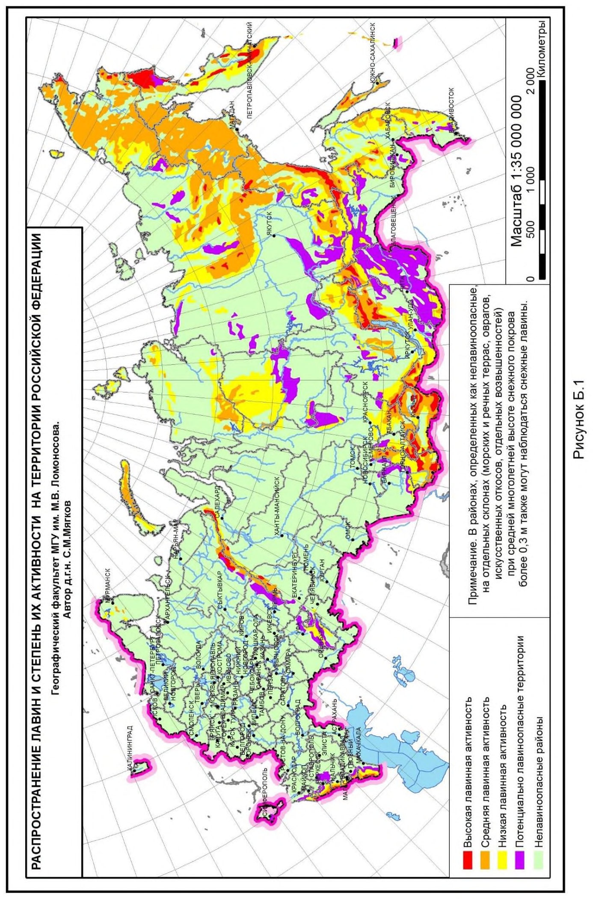
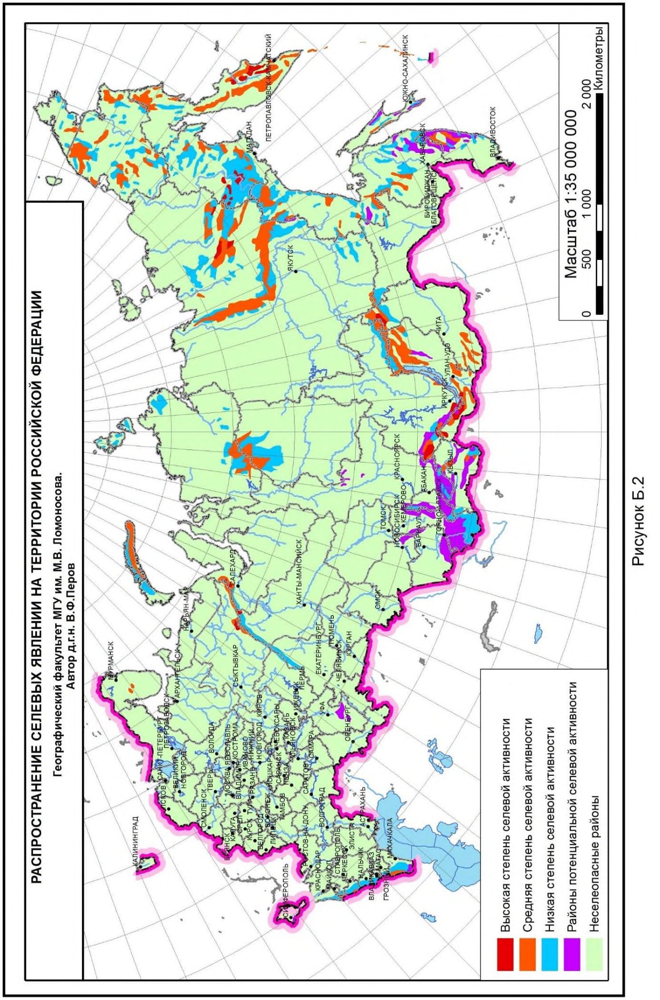
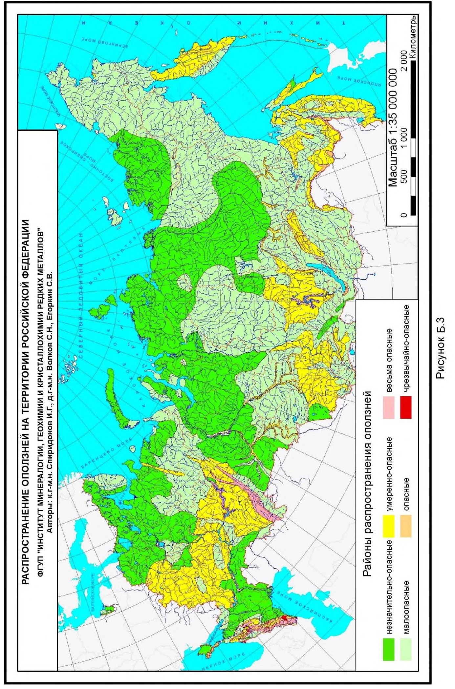
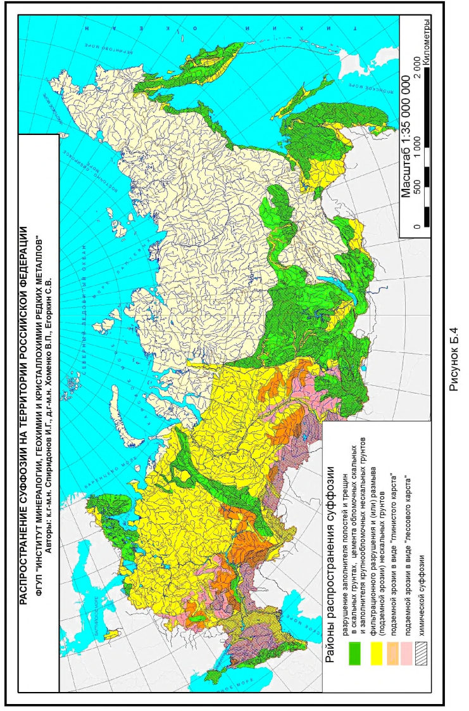
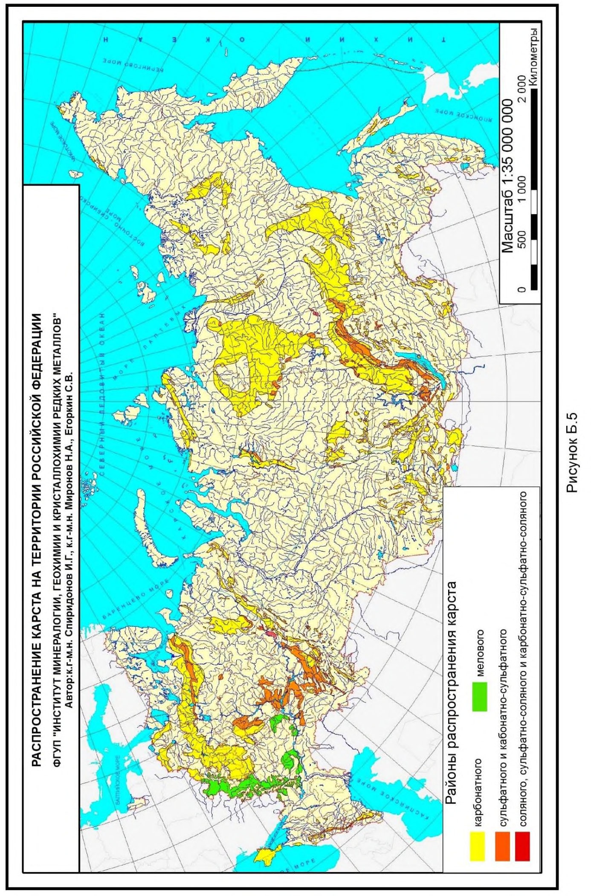
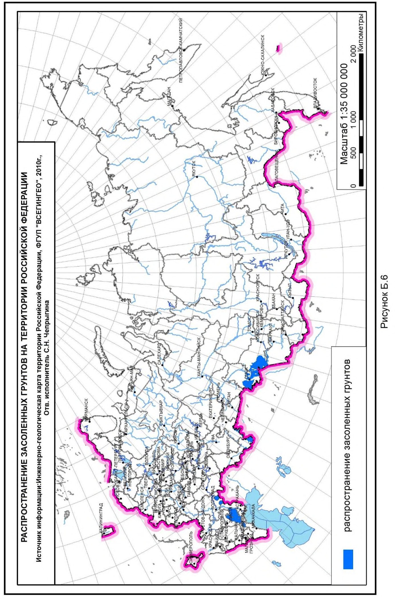
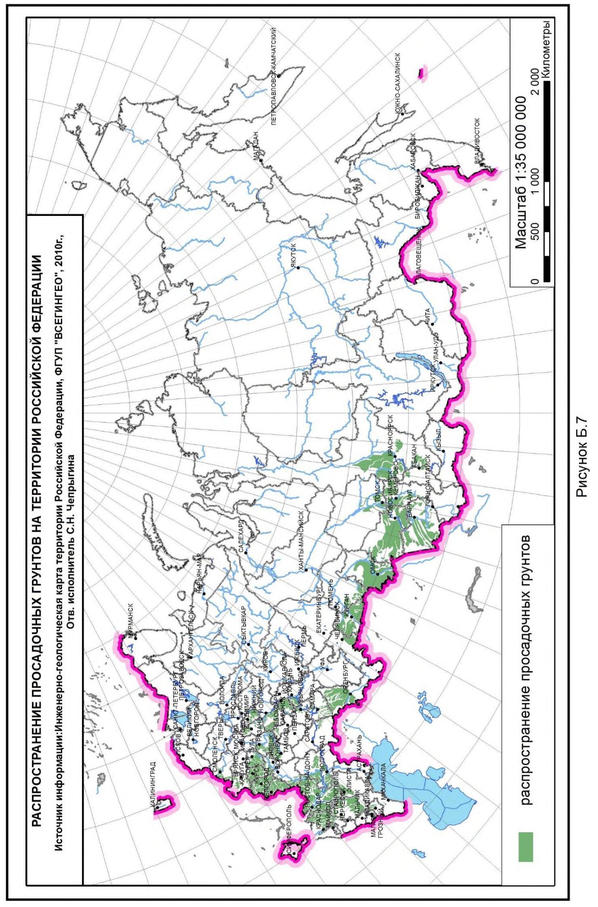
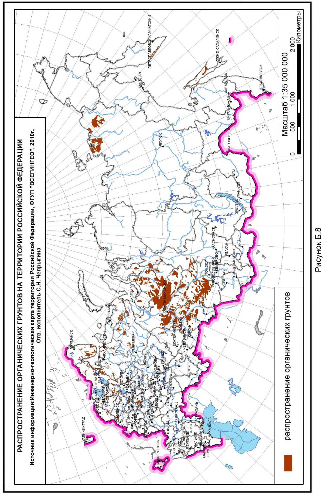
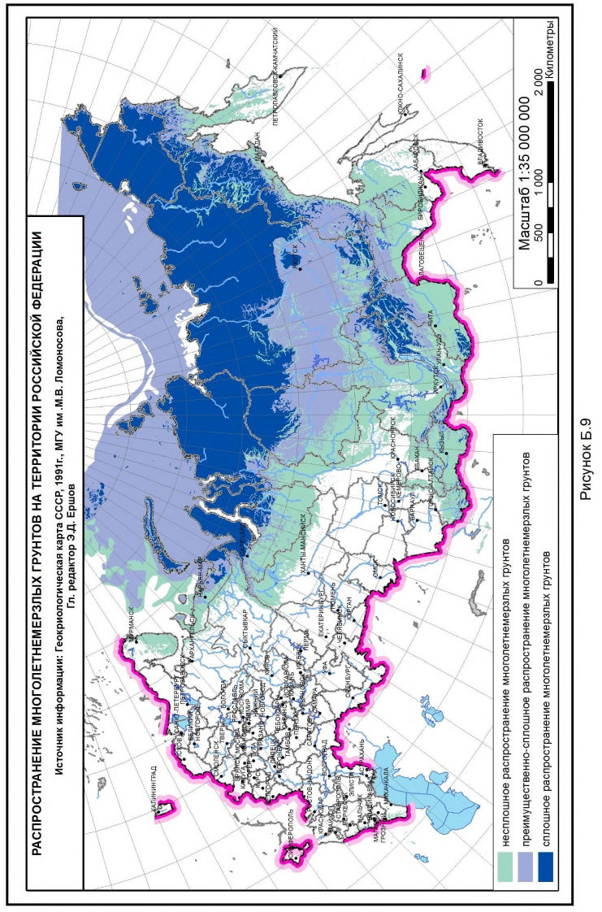
ВПриложение В. (справочное)
Карты цунамирайонирования Северных и Южных Курильских островов
- В.1 Карты цунамирайонирования Северных и Южных Курильских островов (о-в Парамушир, о-в Итуруп) приведены на рисунках В.1-В.2, в том числе:
- карта цунамирайонирования Северных Курильских островов (о-в Парамушир) в масштабе 1:1 500 000 (рисунок В.1);
- карта цунамирайонирования Южных Курильских островов (о-в Итуруп) в масштабе 1:2 000 000 (рисунок В.2).
- В.2 Исходные карты цунамирайонирования Северных и Южных Курильских островов (о-в Парамушир, о-в Итуруп) приведены в электронном приложении В (электронные файлы В.1-В.2), в том числе:
- карта цунамирайонирования Северных Курильских островов (о-в Парамушир) в масштабе 1:1 000 000 (электронный файл В.1);
- карта цунамирайонирования Южных Курильских островов (о-в Итуруп) в масштабе 1:1 000 000 (электронный файл В.2).
- В.3 Опасность цунами для участка побережья для умеренных и сильных цунами с высотой волны Н > 0,5 м определена двумя параметрами:
- асимптотическая частота сильных цунами f (региональный параметр, поскольку само понятие «сильное цунами» является региональным по масштабу проявления);
- характеристическая высота цунами H * для каждого участка побережья с сильной вдольбереговой изменчивостью.
Значения этих параметров определены совокупностью региональных и локальных факторов (особенностями очаговой зоны и характером цунамиактивности, морфоструктурным типом береговой зоны и др.), которые позволяют получить количественную оценку цунамиопасности, связанную с заданным уровнем подъема уровня воды на побережье h над средним уровнем моря в расчете на заданный период времени t .
Для карт цунамиопасности используют уровень ht , который высота цунами превысит в среднем один раз за t лет:
Для типовой столетней повторяемости h 100
Параметр h 100 показан на прилагаемых картах. Асимптотическая частота сильных цунами f для Южных Курильских островов - 0,17 год -1 , для Северных Курильских островов - 0,09 год -1 , кроме о-ва Онекотан, для которого f = 0,1 год -1 .
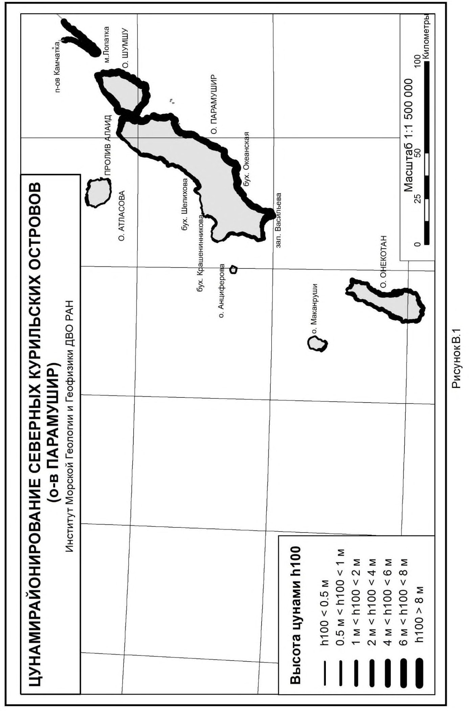
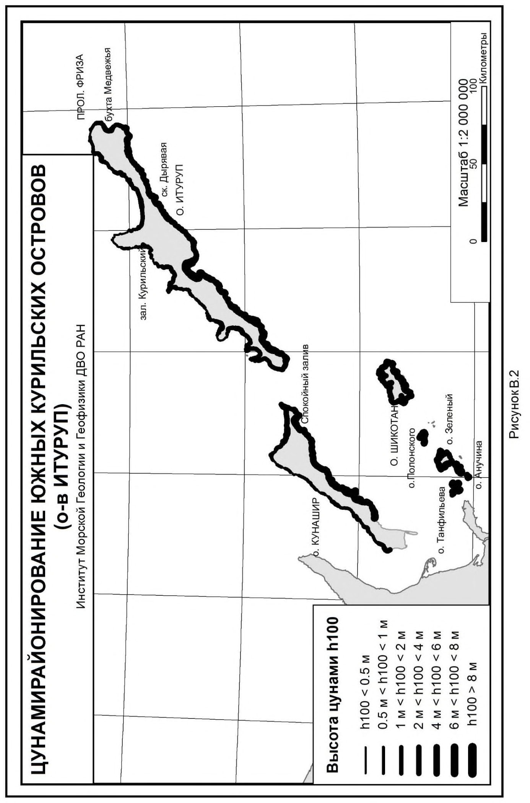
ГПриложение Г. (рекомендуемое)
Масштабы графических материалов по инженерным изысканиям в зависимости от вида градостроительной деятельности
В настоящем приложении приведены масштабы графических материалов по инженерным изысканиям (см. таблицу Г.1).
Таблица Г .1
| Вид документа | Масштаб графических материалов |
|---|---|
| Схемы территориального планирования Российской Федерации | 1:1 000 000 (1:2 500 000 для предварительной оценки возможных опасных природных воздействий) |
| Схемы территориального планирования субъектов Российской Федерации | 1:200000 1:100000 1:50000 |
| Схемы территориального планирования муниципальных районов | 1:50000 1:25000 |
| Документы территориального планирования муниципальных образований | 1:25000-1:10000 |
| Генеральные планы поселений и городских округов | 1:10000 1:5000 1:2000 |
| Проекты планировки территории | 1:5000, 1:2000 |
| Проектная документация | 1:5000-1:200 |
| Строительство, эксплуатация, консервация, снос (демонтаж) зданий и сооружений | 1:2000-1:500 |
Библиография
- [1] Федеральный закон от 29 декабря 2004 г. № 190-Ф3 «Градостроительный кодекс Российской Федерации»
- [2] Федеральный закон от 30 декабря 2009 г. № 384-ФЗ «Технический регламент о безопасности зданий и сооружений»
- [3] Постановление Правительства Российской Федерации от 18 апреля 2014 г. № 360 «Об определении границ зон затопления и подтопления» Ключевые слова: опасные природные воздействия, опасные природные процессы, опасные природные явления, общее сейсмическое районирование, многолетнемерзлые грунты, оценка опасности природных воздействий, специфические грунты наименование организации Руководитель разработки Генеральный директор \_\_\_\_\_\_\_\_\_\_\_\_\_\_\_ В.В. Гранев Исполнитель Заместитель генерального директора \_\_\_\_\_\_\_\_\_\_\_\_\_\_\_ Д.К.Лейкина ООО «ИГИИС»\_\_\_\_\_ наименование организации Руководитель разработки Генеральный директор ООО «ИГИИС» \_\_\_\_\_\_\_\_\_\_\_\_\_\_\_ М.И. Богданов Ответственный исполнитель Начальник отдела нормативно- методологических исследований \_\_\_\_\_\_\_\_\_\_\_\_\_\_\_ Е.В. Леденева Исполнитель Первый заместитель генерального директора \_\_\_\_\_\_\_\_\_\_\_\_\_\_\_ Г.Р. Болгова Исполнитель Главный специалист \_\_\_\_\_\_\_\_\_\_\_\_\_\_\_ С.А. Гурова Исполнитель Ведущий специалист \_\_\_\_\_\_\_\_\_\_\_\_\_\_\_ Н.П.Иевлева Исполнитель Главный специалист \_\_\_\_\_\_\_\_\_\_\_\_\_\_\_ И.Д.Колесников Исполнитель Начальник отдела ГИС \_\_\_\_\_\_\_\_\_\_\_\_\_\_\_ Н.Г.Корнева Исполнитель Главный специалист \_\_\_\_\_\_\_\_\_\_\_\_\_\_\_ М.С.Наумов